Paul Ludwig Branzk
Email
LinkedIn
GitHub
CV
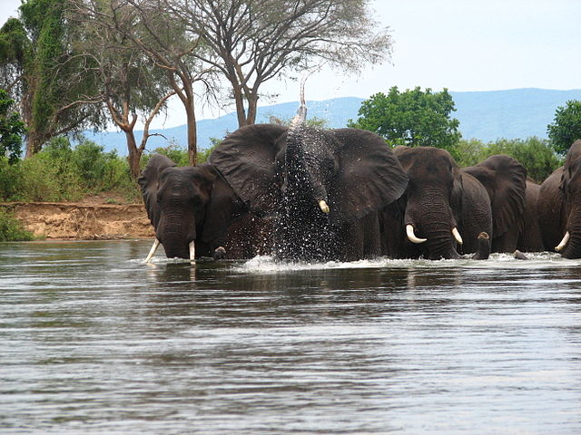
River Basin Management - Scenario Analysis
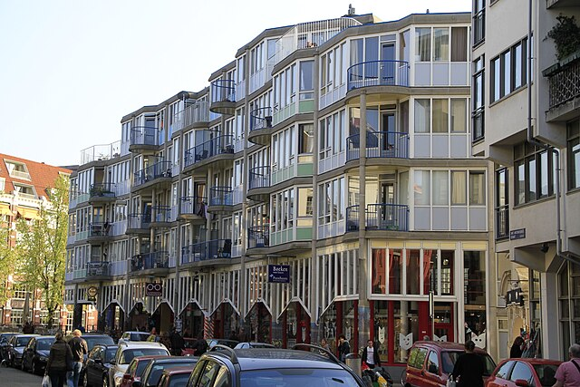
Student Housing - System Analysis
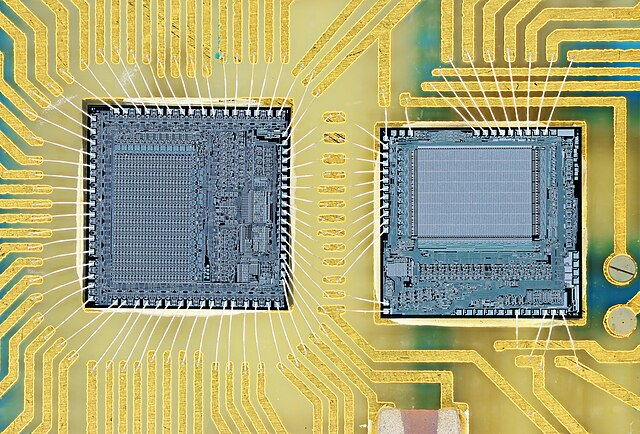
Semiconductors - Actor Analysis
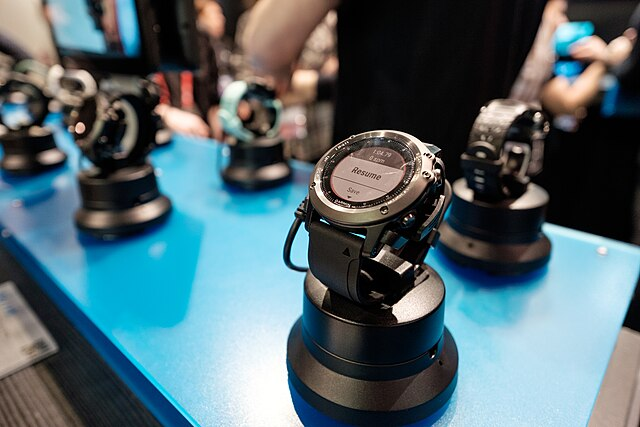
Dataism - Essay (deutsch)
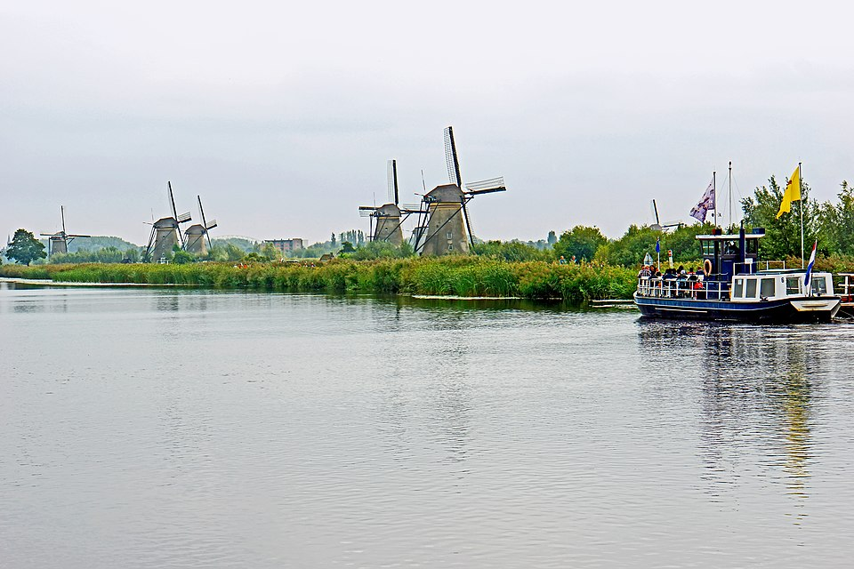
Model-based Decision Making - Decision Analysis
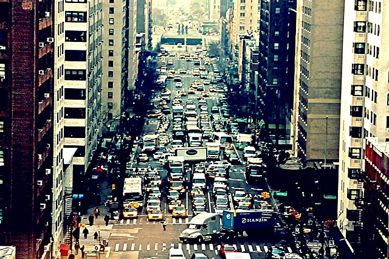
Urban Mobility - Data Analysis
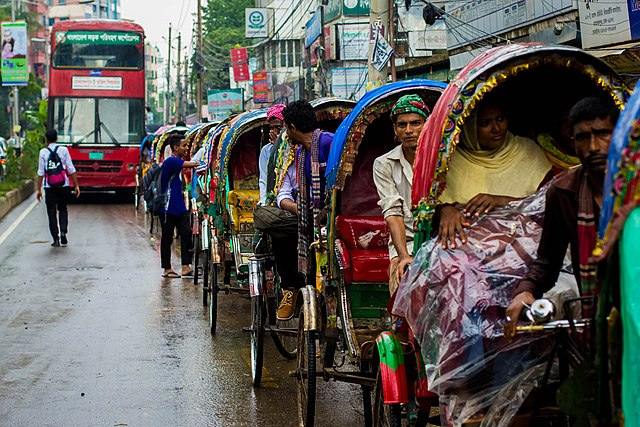
Advanced Simulation - Assignment Collection
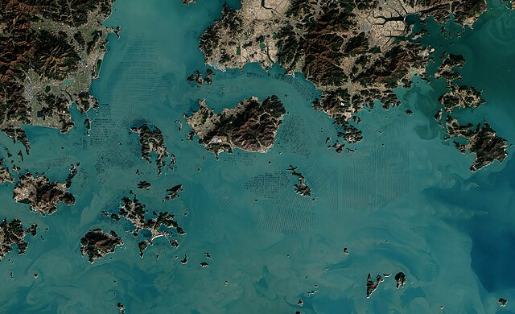
Deep Sea Mining - Assessment Analysis
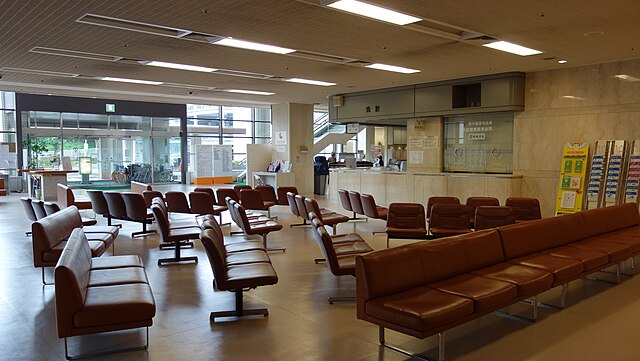
Nurse Shortage - Policy Analysis
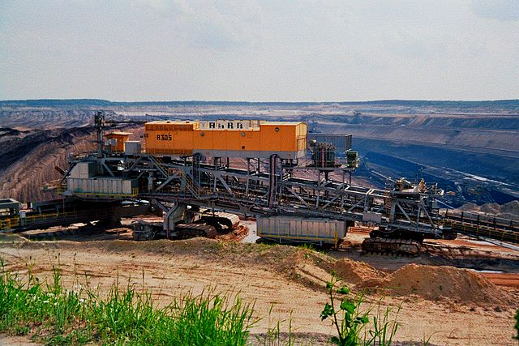
River Basin Management - Model Analysis
Tagebau Jänschwalde - Governance Analysis
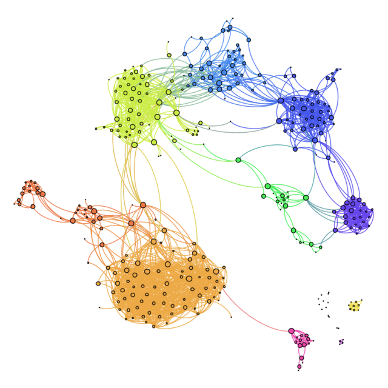
Echo Chambers - Literature Analysis
 Tagebau Jänschwalde - Governance Analysis
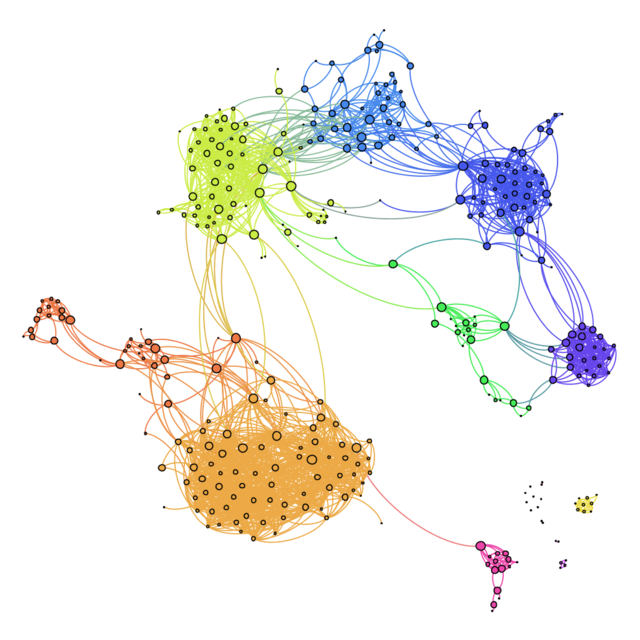
Echo Chambers - Literature Analysis
Tagebau Jänschwalde - Governance Analysis
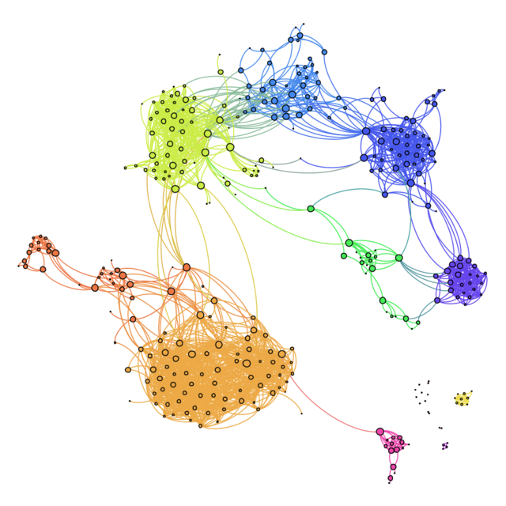
Echo Chambers - Literature Analysis
Tagebau Jänschwalde - Governance Analysis
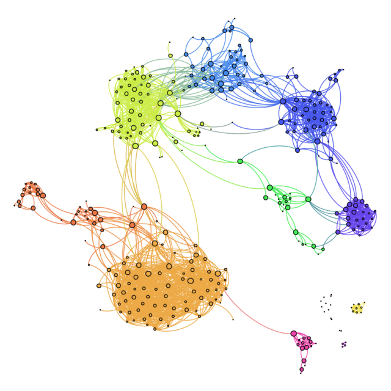
Echo Chambers - Literature Analysis
Tagebau Jänschwalde - Governance Analysis
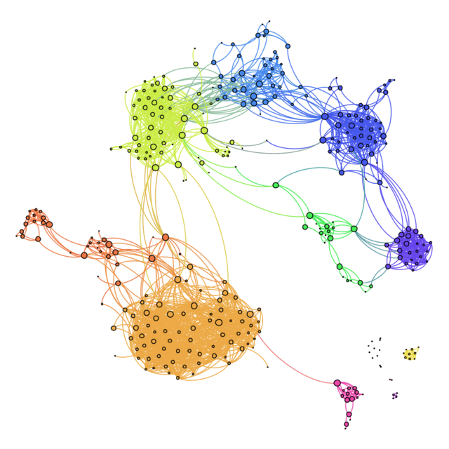
Echo Chambers - Literature Analysis